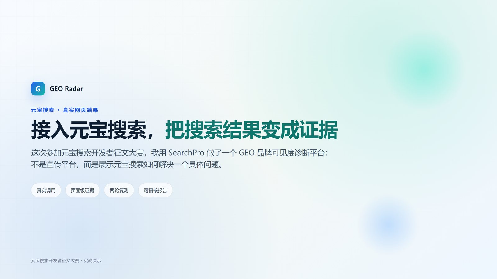
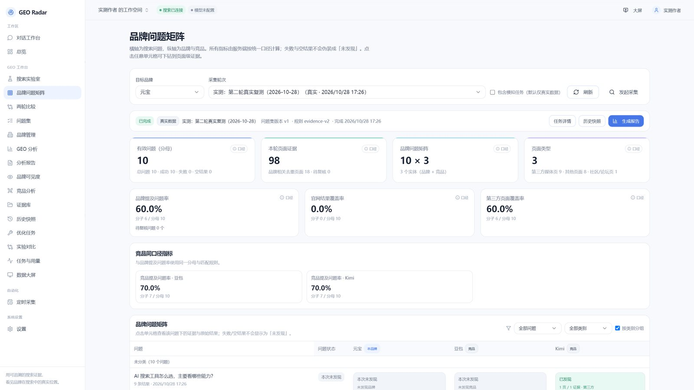
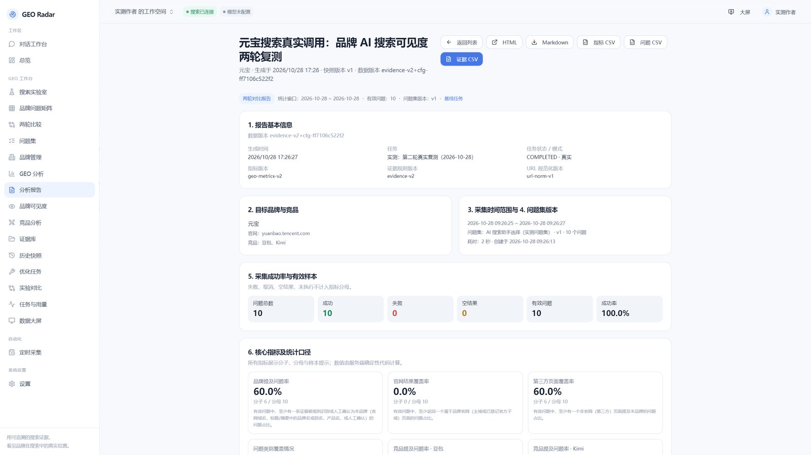
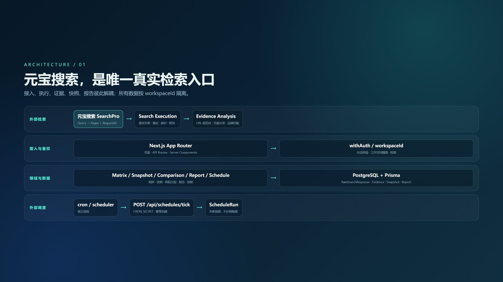

EVIDENCE-FIRST GEO
把 AI 搜索的网页结果，变成可追溯的品牌证据
GEO Radar 不生产一个说不清来源的“AI 可见度分数”。它保存每一次真实搜索的原始结果，把页面变成可核对的证据，再计算指标、做矩阵、复测和报告。
Next.js 14TypeScriptPrismaPostgreSQL119 testsMIT

不是另一个搜索框
从真实结果到可复核结论，中间每一步都留痕。
🔎 元宝 SearchPro
真实网页结果、RequestId、标题/URL/摘要/站点；密钥服务端加密，原始响应不可变。
🧾 页面级证据
URL 规范化、可解释页面分类、品牌匹配依据、人工复核历史；失败/空结果/未发现分开。
🧩 矩阵与复测
问题 × 品牌/竞品矩阵、不可变快照、两轮比较、页面增减和观测波动。
📄 证据报告
14 节报告固定生成时快照；指标带分子/分母，代表性证据带 RequestId。
⏱️ 定时采集
外部 cron / scheduler 驱动，成本确认、幂等执行、失败保留失败状态。
🔐 数据隔离
所有 API 经过 withAuth；按 workspaceId 隔离；Mock 默认不进入真实指标。
真实产品截图
来自元宝真实工作区：10 个问题、两轮复测、98 条结果。


一条可追溯的证据流水线
元宝搜索是唯一真实检索入口；分析、快照、报告都能回到原始请求。

Yuanbao SearchPro → Query / Pages / RequestId
↓
RawSearchResponse 完整 JSON（不可变）
↓
Evidence 页面类型 / 来源角色 / 匹配依据
↓
AnalysisSnapshot COLLECTION / RECOMPUTE
↓
Matrix / Comparison / Report
本次真实样本
只陈述样本内的事实，不把 0% 说成官网有问题，也不把两轮波动说成因果。
| 指标 | 结果 | 口径 |
|---|---|---|
| 成功问题 | 10 / 10 | 真实 YUANBAO 任务 |
| 返回结果 | 98 | 第二轮复测 |
| 品牌提及问题率 | 60% | 6 / 10 有效问题 |
| 官网结果覆盖率 | 0% | 0 / 10；已配置官网，不是未配置 |
| 第三方页面覆盖率 | 60% | 6 / 10 |
两轮品牌状态 100% 一致，观测极差 0；样本只有两轮，不能当成稳定分布。
快速开始
Docker Compose 一键启动，或使用本机 PostgreSQL。
Docker（推荐体验）
git clone https://github.com/Leterhong/GEO-Radar.git
cd GEO-Radar
npm run docker:up
# http://localhost:3000本地开发
npm ci
cp .env.example .env.local
npm run dev:db
npm run db:migrate
npm run dev